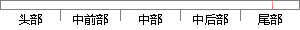

使用被禁用账户登录网站，系统提示“该账号被禁用”
片段位置图

相似结果|
相似片段 1：用户被禁用之后将不能登录该平台，登录时给出原因提示。管理员禁号活动图如图3．7所示。同样的，为了恢复用户的账号状态，管理员也可以将用户的账号恢复正常，其操作与禁号相同，不再赘述。恢复正常后，系统应向
相似片段 2：。MajorCodenvarchar(50)外键，不允许为空，同表4．5中的33对应IsDisabledbit 不允许为 账号是否被禁用。0表示启用；空，默认值 l表示被禁用。用户帐号被禁为0用后将无法登录系统。表4-11用户
|
※ 片段修改建议 ※
近似词参考：- 使用：利用
- 系统：体系
- 提示：提醒
系统自动生成语句： 利用被禁用账户登录网站，体系提醒“该账号被禁用”
注：本片段修改建议为系统自动生成，仅供参考。